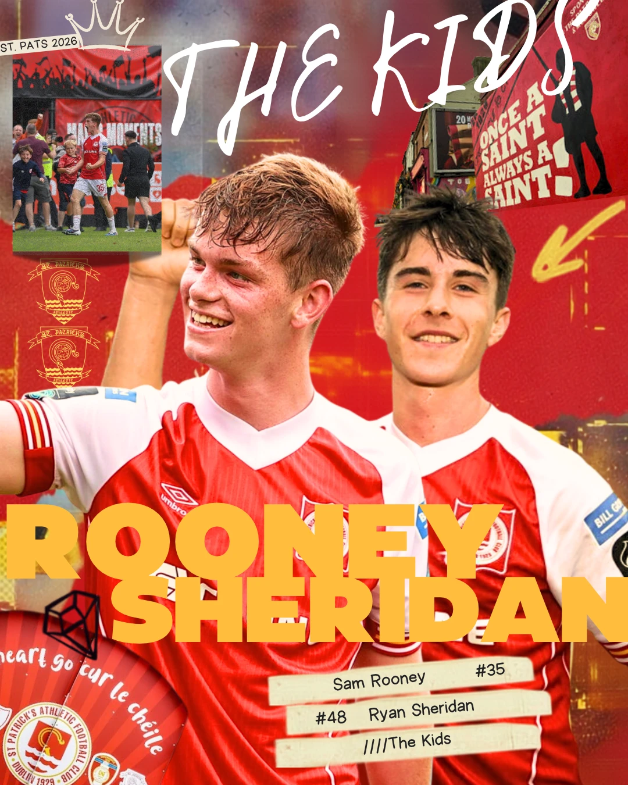
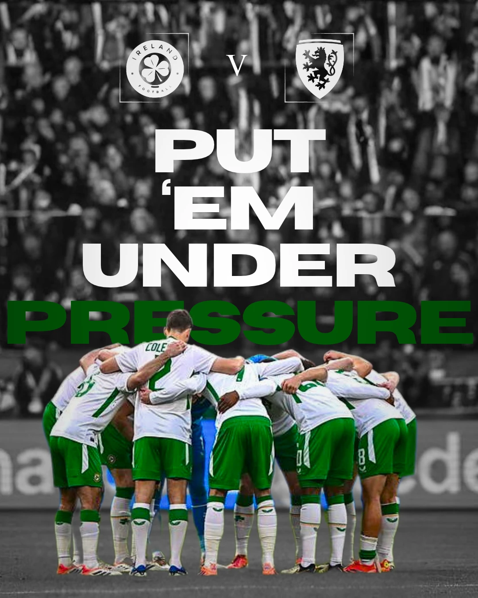
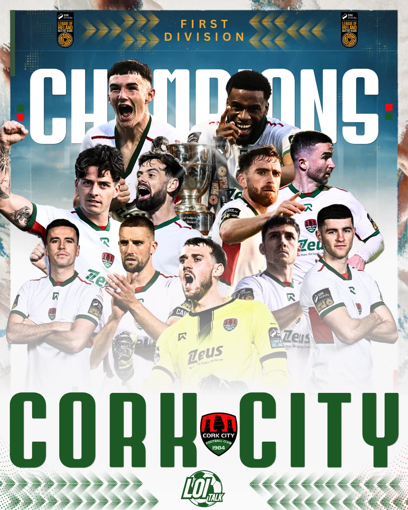
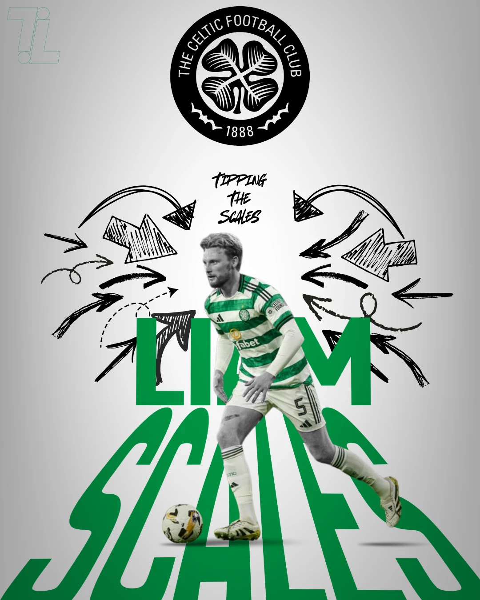
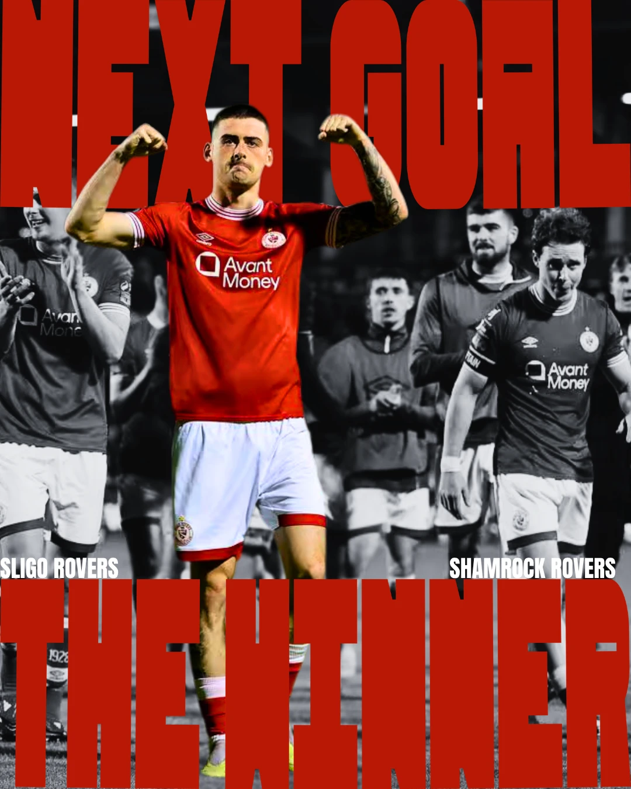
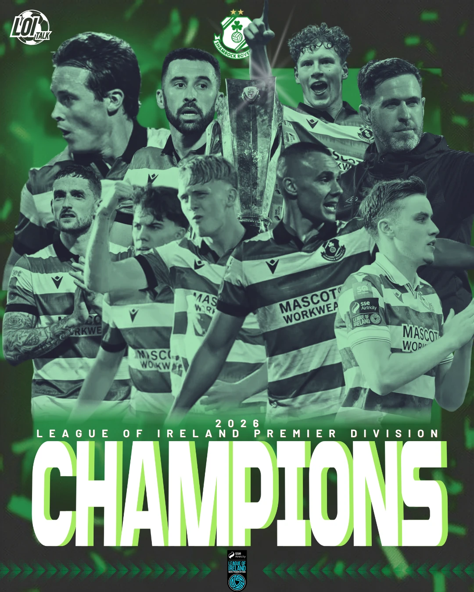
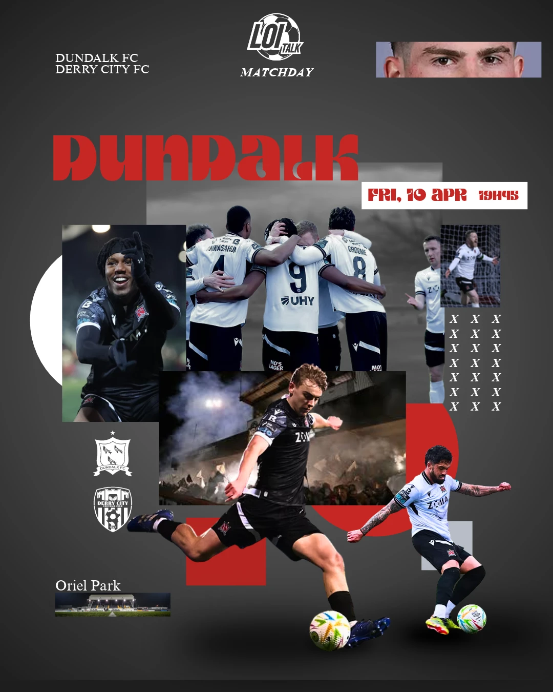

Good work should
have something to show.
I've worked on the writing, graphics and planning behind football accounts and publications. Some projects were about building an audience. Others were about making the content better, or simply finding a way of saying something interesting about football.
Featured project
From zero to
8,000+ followers.
Academy football deserves proper coverage. During my involvement with Bohemians Academy, its Instagram following grew from zero to more than 8,000 in less than three months.
It was the sort of work I enjoy most: getting close to the football, helping shape what gets posted and giving people a reason to follow what's happening beyond the first team. Young players have good stories. The challenge is making sure people actually see them.
Growth figures and timing reflect my experience with the academy. Supporting screenshots and reporting dates can be added to document the results in more detail.
Academy social media, content and audience development
Football content, creative graphics and ongoing publishing support
Instagram following grew from zero to over 8,000 in less than three months
Head of Content & Media · Former role
Three editions a week.
And an audience to build.
I started as a writer before becoming Head of Content & Media at Boardroom Ball. I oversaw the content and media output, from planning and writing football business stories to putting together the newsletter and keeping the publishing schedule moving. Three newsletters every week is a decent way to learn what readers actually want.
Historical figures discussed in previous chats. We should add original analytics and the precise reporting period before the final site goes live.
Independent publishing
Something of
my own.
Touchline is where the writing, design and football business side of my work all ended up in the same place. I've written the pieces, made the covers, planned the posts and spent far too much time figuring out what should go where.
It's given me the freedom to try different ideas, from League of Ireland reporting to club strategy, tactical features and football culture. The work hasn't always looked the same, which is probably a good thing.
Explore my writing ↗See the design work ↗



Selected designs from my creative graphics archive. These illustrate my visual work rather than an exact record of any individual social campaign.
TALK.



Head of Content & Media · Current role
Closer to the
Irish game.
I’m currently Head of Content & Media at LOI Talk. I oversee the editorial and media work alongside writing, social content and graphics. A lot of it is about keeping up with the League of Ireland, spotting stories that might otherwise slip by and finding the right way to put them in front of people.
It's also given me the chance to cover matches, develop short-form football content and work with stories from across both divisions. There's certainly never a shortage of things happening in Irish football.
See selected articles ↗Writing. Graphics.
Planning. Publishing.
Most of my work ends up using more than one of those skills. This page covers the media side, while the graphics and writing sections show what it looks like when the work is finished.